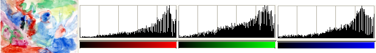

O comando faz a mesma coisa que o comando Esticar Contraste, exceto por operar no espaço de cores HSV em vez do RGB, e este comando preserva a tonalidade. Deste modo, ele estica os intervalos dos componentes de cor Matiz, Saturação e Valor independentemente. Ocasionalmente os resultados são bons, mas geralmente um pouco estranhos. O “Esticar Contraste HSV” opera em camadas de imagens RGB e Indexadas. Se a imagem estiver em Tons de cinza, a entrada do menu é desativada.
Figura 16.158. Imagem original

A camada ativa e seus histograma Vermelho, Verde e Azul antes do “Esticar Contraste HSV”.
Figura 16.159. Imagem após o comando

A camada ativa e seus histogramas Vermelho, Verde e Azul após o “Esticar Contraste HSV”. Contraste, luminosidade e matizes estão melhorados.